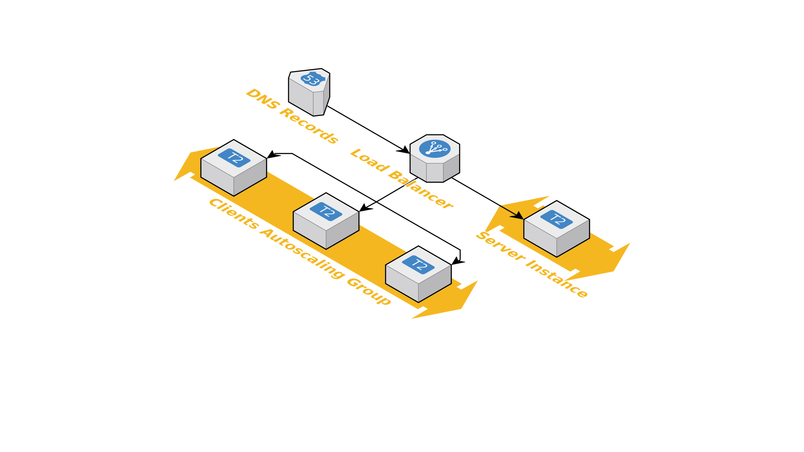

Problems with Managing Infrastructure (Manually)
Visibility
- Details are siloed in someone's head
- Changes are not visible
- Dependencies are hard to see
Difficulty
- Almost impossible to replicate
- Different APIs for different cloud providers
- Tedious and prone to errors
Infrastructure as Code
Provision, update, and manage your cloud infrastructure with code.Benefits
- Automated
- Version control with VCS like Git
- Replicate just by "copy/pasting" or changing variables
- "Just" read the code to figure out details
- "Just" read the code to figure out dependencies
- Abstraction and reusability
Terraform
- FOSS and paid versions
- Declarative configuration
- Single format across multiple providers
- Huge list of providers supported
Ansible/Chef/Puppet
- Configuration management that can also manage infrastructure
- More "procedural" form of provisioning
- Works well with Terraform — configure after Terraform provisions
CloudFormation/Heat
- Specific to the service
- Each service has its own syntax
Demo
Application
- Silly Chatroom
- Stateless Static Javascript Client
- Stateful Server
Basic Idea
- ASG for clients and servers separately
- One ELB with different listener rules to target the ASG
Diagram
Hidden Details...
- Security groups rules between ELB and EC2 instances
- Launch configuration details for ASG
- Listener for ports
- Redirect HTTP -> HTTPS listner
- Certificate for HTTPS
- Listener rules to handle different host names
- Target groups for ASG
- Dependencies... which should I create first?
- ...
Code Walkthrough
Source code at https://github.com/lawliet89/terraform-talk/tree/master/demomain.tf
Required variables.tf
Optional variables.tf
Autoscaling Group
Launch Configuration
Security Group Rules
ELB
Listeners
Don't forget extra security rules!
Repeat for the server.
Route 53
The order we write this does not matter.